Contents
% c = EEGStudyInterface(); % c.import_data() cc = EEGStudyEmotiv(); cc.import_data('/Users/Zhe/Documents/seizure/myeegcode/processed_data/Vidya_june_6_Data/faster_1630.set', 'faster_1630')
eeglab: options file is ~/eeg_options.m EEGLAB: adding "FASTER" v.1.0 (see >> help eegplugin_FASTER) EEGLAB: adding "Fieldtrip-lite" to the path; subfolders (if any) might be missing from the path EEGLAB: adding "Fileio" to the path; subfolders (if any) might be missing from the path EEGLAB: adding "dipfit" v2.3 (see >> help eegplugin_dipfit) EEGLAB: adding "firfilt" v1.6.1 (see >> help eegplugin_firfilt) Initializing SIFT... Start SIFTing! EEGLAB: adding "sift" v1.3.3 (see >> help eegplugin_sift) pop_loadset(): loading file /Users/Zhe/Documents/seizure/myeegcode/processed_data/Vidya_june_6_Data/faster_1630.set ... Reading float file '/Users/Zhe/Documents/seizure/myeegcode/processed_data/Vidya_june_6_Data/faster_1630.fdt'... Scaling components to RMS microvolt eeg_checkset: recomputing the ICA activation matrix ... Warning: Directory already exists.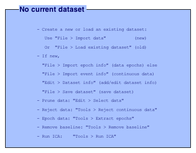
band power experiments
set_window_params(obj, window_length, stride, window_generator) EEG band power distribution, distinctive separation between on-seizure and seizure seizure states, parameters chosen to achieve very good separation
% TODO: compare with other interictal, preictal and postictal states cc.set_window_params(2, 0.5, 'EEGWindowBandPower') disp('finishing extracting all windows') % cc.plot_pca() disp('start to compute kmeans') cc.k_means(6) cc.EEGData.ica_electrodes
finishing extracting all windows
start to compute kmeans
iter phase num sum
1 1 643 3.51738
2 1 46 3.2944
3 1 29 3.21597
4 1 23 3.18532
5 1 17 3.16807
6 1 10 3.15788
7 1 14 3.13363
8 1 9 3.12056
9 1 5 3.11933
10 1 5 3.11771
11 1 2 3.11725
12 1 1 3.11719
13 2 1 3.11591
14 2 0 3.11576
Best total sum of distances = 3.11576
finishing kmeans clustering
Plotting...
ans =
pop_topoplot(,0, [1:13] ,'',[4 4] ,0,'electrodes','on');
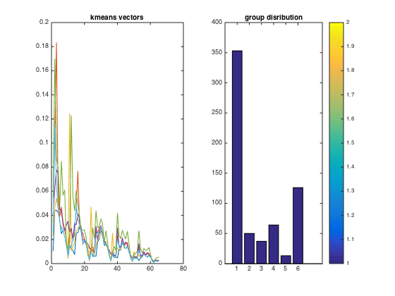 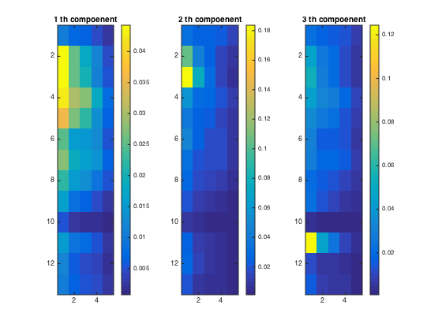 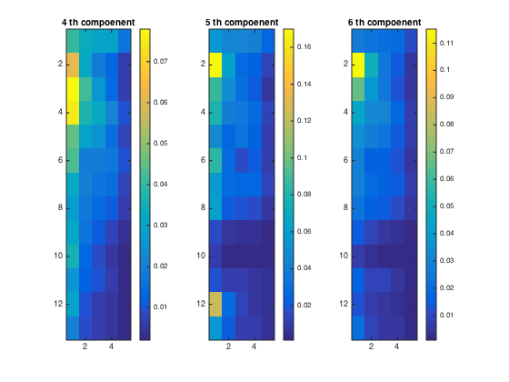 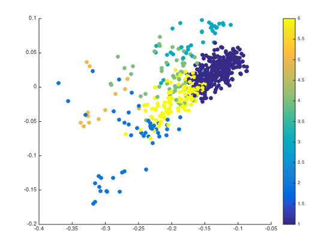 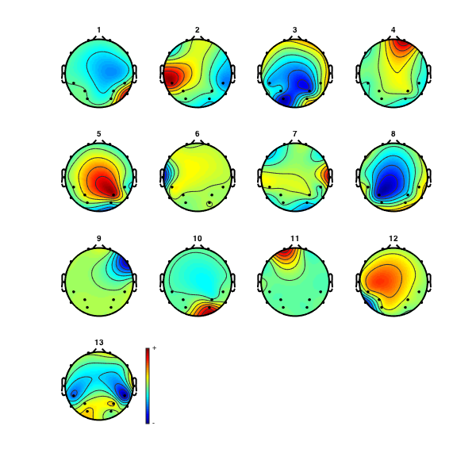 comp sensing feature extraction
% I would not bet on it cause feature extraction is very time consuming, Moreover, % it is still a one-channel method, thus greatly limiting the prospective for finding % cross channel information % now just to make the feature work, I am not pushing for performance, and I am not expecting great performance % c.set_window_params(0.5, 5, 'EEGWindowCompSensing') % disp('finishing extracting all windows') % c.plot_pca() % disp('start to compute kmeans') % c.k_means(10)
gardern's energy implementation
% c.set_window_params(2, 1, 'EEGWindowGardnerEnergy') % disp('finishing extracting all windows') % c.plot_pca() % disp('start to compute kmeans') % c.k_means(10)
Juarez Data
dd = EEGStudyEmotiv(); dd.import_data('/Users/Zhe/Documents/seizure/myeegcode/processed_data/Juarez_Data/faster_short.set', 'faster_short.set')
eeglab: options file is ~/eeg_options.m EEGLAB warning: there can be only one EEGLAB window, closing old one EEGLAB: adding "FASTER" v.1.0 (see >> help eegplugin_FASTER) EEGLAB: adding "Fieldtrip-lite" to the path; subfolders (if any) might be missing from the path EEGLAB: adding "Fileio" to the path; subfolders (if any) might be missing from the path EEGLAB: adding "dipfit" v2.3 (see >> help eegplugin_dipfit) EEGLAB: adding "firfilt" v1.6.1 (see >> help eegplugin_firfilt) Initializing SIFT... Start SIFTing! EEGLAB: adding "sift" v1.3.3 (see >> help eegplugin_sift) pop_loadset(): loading file /Users/Zhe/Documents/seizure/myeegcode/processed_data/Juarez_Data/faster_short.set ... Reading float file '/Users/Zhe/Documents/seizure/myeegcode/processed_data/Juarez_Data/faster_short.fdt'... Scaling components to RMS microvolt eeg_checkset: recomputing the ICA activation matrix ... Warning: Directory already exists.
band power experiments
set_window_params(obj, window_length, stride, window_generator) EEG band power distribution, distinctive separation between on-seizure and seizure seizure states, parameters chosen to achieve very good separation
% TODO: compare with other interictal, preictal and postictal states dd.set_window_params(2, 0.5, 'EEGWindowBandPower') disp('finishing extracting all windows') % dd.plot_pca() disp('start to compute kmeans') dd.k_means(6) dd.EEGData.ica_electrodes
finishing extracting all windows
start to compute kmeans
iter phase num sum
1 1 625 3.63845
2 1 56 3.33209
3 1 49 3.23091
4 1 51 3.15228
5 1 28 3.12489
6 1 20 3.11007
7 1 6 3.10827
8 1 4 3.10778
9 1 2 3.10722
10 1 4 3.10508
11 1 4 3.10283
12 1 4 3.10176
13 1 1 3.10001
14 2 1 3.09854
15 2 1 3.09741
16 2 1 3.07326
17 2 1 3.062
18 2 1 3.05895
19 2 1 3.05843
20 2 1 3.05505
21 2 1 3.05133
22 2 1 3.04266
23 2 1 3.03743
24 2 1 3.03385
25 2 1 3.03316
26 2 1 3.03308
27 2 1 3.03303
28 2 0 3.03292
Best total sum of distances = 3.03292
finishing kmeans clustering
Plotting...
ans =
pop_topoplot(,0, [1:13] ,'',[4 4] ,0,'electrodes','on');
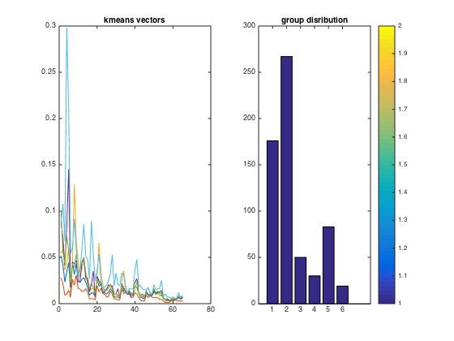 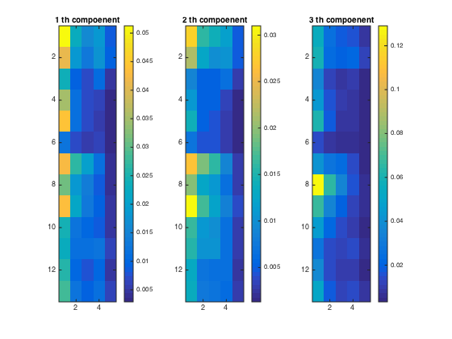 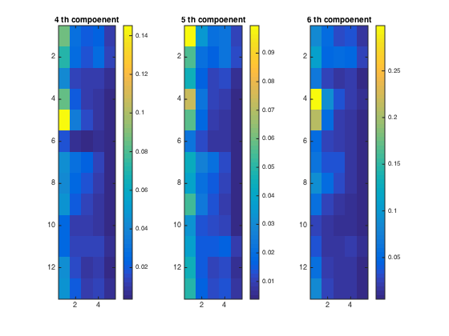 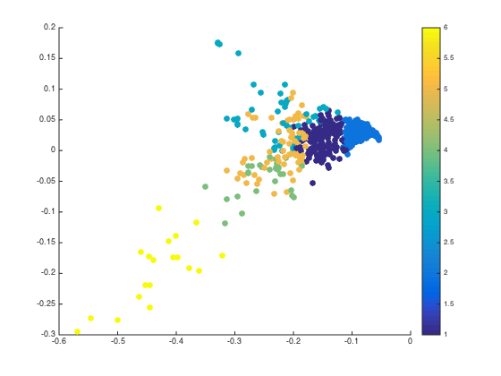 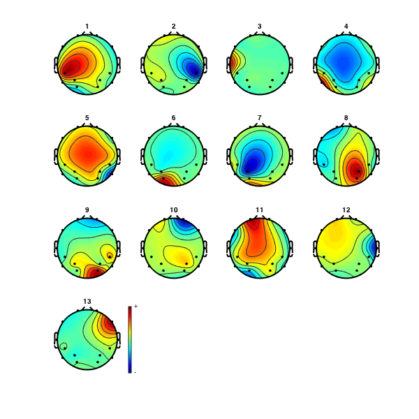